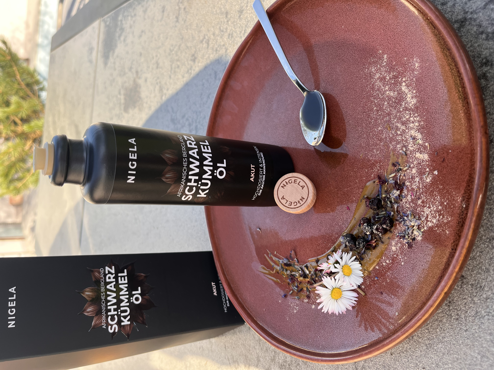

Nº 01
Nigela
Bio · Familienbetrieb · Kaltgepresst
Bayerisches Familienunternehmen. Bio-Schwarzkümmelöl — kaltgepresst und ungefiltert in eigener Manufaktur.
Kaufe ich: Schwarzkümmelöl
Code
Zu Nigela →
SMACADO10
